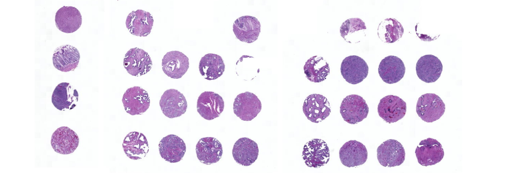

Dearraying tissue microarray (TMA) slides.
Tissue microarray (TMA) slides are often used in medical image analysis. These slides contain tissue samples from multiple patients, and thus each tissue microarray spot must be separated before cutting the spots into tiles. Luckily this is (also) easy with SlideReader!
from histoprep import SlideReader
# Read the slide image.
reader = SlideReader(tma_slide_path)
display(reader.thumbnail)

To separate each spot from the image, SlideReader offers a dearray function.
# Dearray spots.
reader.dearray(min_area=0.5)
# After dearraying, an annotated thumbnail for spots is available.
display(reader.annotated_thumbnail_spots)

Now each spot can be saved.
spot_metadata = reader.save_spots("/data/tmp/")
|##########| 31/31 [00:17<00:00, per_image=6.2s]
Now all spots, the spot mask, thumbnail and the annotated thumbnail images are saved into the output_dir.
/data/tmp/
└── tma_slide
├── annotated_thumbnail_spots.jpeg
├── spot_mask.jpeg
├── spot_metadata.csv
├── spots
│ ├── TMA09-3_T1_HE_spot_1.jpeg
│ ├── TMA09-3_T1_HE_spot_10.jpeg
│ ├── TMA09-3_T1_HE_spot_11.jpeg
│ ├── TMA09-3_T1_HE_spot_12.jpeg
│ └── [omitted 29 additional entries]
└── thumbnail.jpeg
When SlideReader saves individual spots, it does not calculate preprocessing metrics. Information on each spot such as it's coordinates are saved to spot_metadata.csv and also returned by the save_spots function.
spot_metadata.head(5)
| slide_name | x | y | w | h | spot_number | spot_name | path | |
|---|---|---|---|---|---|---|---|---|
| 8 | tma_slide | 16139 | 207775 | 10888 | 10882 | 28 | tma_slide_spot_28 | /data/tmp/tma_slide/spots/tma_slide_spot_28.jpeg |
| 17 | tma_slide | 16396 | 193053 | 10503 | 11010 | 19 | tma_slide_spot_19 | /data/tmp/tma_slide/spots/tma_slide_spot_19.jpeg |
| 25 | tma_slide | 16652 | 180507 | 10632 | 10626 | 10 | tma_slide_spot_10 | /data/tmp/tma_slide/spots/tma_slide_spot_10.jpeg |
| 30 | tma_slide | 17420 | 167577 | 10503 | 10626 | 1 | tma_slide_spot_1 | /data/tmp/tma_slide/spots/tma_slide_spot_1.jpeg |
| 16 | tma_slide | 39708 | 194461 | 10888 | 11138 | 20 | tma_slide_spot_20 | /data/tmp/tma_slide/spots/tma_slide_spot_20.jpeg |